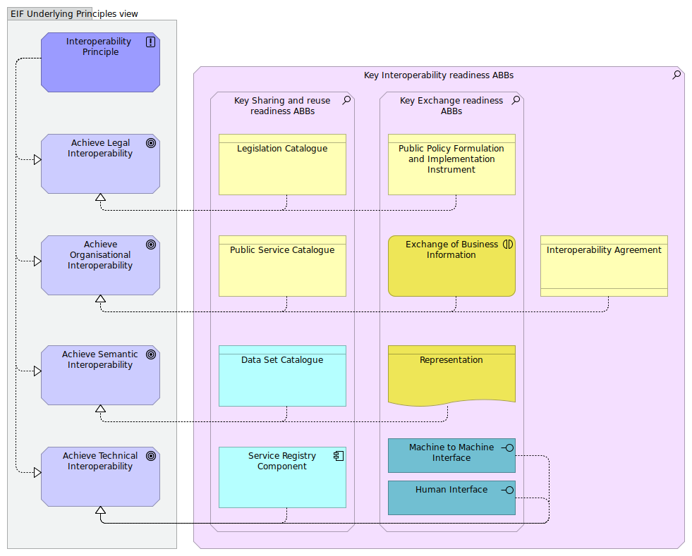

Integrated Public Service Governance viewpoint
(
)

The Integrated Public Service Governance viewpoint models the most salient key interoperability enablers(*). The viewpoint uses the ArchiMate© motivation extension to assess the “Sharing and reuse” readiness, the “Exchange readiness” and the “Interoperability readiness” of solutions that are necessary to enable the efficient and effective delivery of public services across administrations. European public service provision often requires different public administrations to work together to meet end users’ needs and provide public services in an integrated way. When multiple organisations are involved there is a need for coordination and governance by the authorities with a mandate for planning, implementing and operating European public services. Services should be governed to ensure: integration, seamless execution, reuse of services and data, and development of new services and ‘building blocks'. (*)DECISION (EU) 2015/2240 OF THE EUROPEAN PARLIAMENT AND OF THE COUNCIL of 25 November 2015 establishing a programme on interoperability solutions and common frameworks for European public administrations, businesses and citizens (ISA2 programme) as a means for modernising the public sector. Integrated Public Service Governance viewpoint should cover all layers: legal, organisational, semantic and technical. Ensuring interoperability when preparing legal instruments, organisation business processes, information exchange, services and components that support European public services is a continuous task, as interoperability is regularly disrupted by changes to the environment, i.e. in legislation, the needs of businesses or citizens, the organisational structure of public administrations, the business processes, and by the emergence of new technologies. Source: The New EIF https://ec.europa.eu/isa2/sites/isa/files/eif_brochure_final.pdf Narrative: This viewpoint selects Architecture Building Blocks related to Interoperability Integrated Public Service Governance: 1. EIF [Interoperability Principles] are used to realise the overall goal of [Achieving Interoperability]. 2. Particularly, the goal of [Achieving Legal Interoperability] is realised by [Legislation Catalogues] that are used for provisioning/consuming legal texts and by [Public Policy Formulation and Implementation Instruments] that are used to ensure compatible legal/juridical certainty. 3. Particularly, the goal of [Achieving Organisational Interoperability] is realised by [Public Service catalogues] that are used for provisioning/consuming front-office public services as well as by the [Exchange of Business Information] that are used to ensure compatible interaction and by [Interoperability Agreements] that define the operational terms/conditions for “sharing and reuse” and exchange of information. 4. Particularly, the goal of [Achieving Semantic Interoperability] is realised by [Data Set Catalogues] that are used for provisioning/consuming data and by [Representations] that are used to ensure a compatible interpretation. 5. Particularly, the goal of [Achieving Technical Interoperability] is realised by [Service Registries] that are used for provisioning/consuming back-office services and by [Machine to Machine Interfaces] or [Human Interfaces] that are used to ensure compatible interfaces.
dct:title
Integrated Public Service Governance viewpoint
Key Interoperability readiness ABBs
Interoperability Agreement
Key Sharing and reuse readiness ABBs
Legislation Catalogue
Public Service Catalogue
Data Set Catalogue
Service Registry Component
Key Exchange readiness ABBs
Machine to Machine Interface
Human Interface
Representation
Exchange of Business Information
Public Policy Formulation and Implementation Instrument
Achieve Legal Interoperability
Achieve Organisational Interoperability
Achieve Semantic Interoperability
Achieve Technical Interoperability
Interoperability Principle